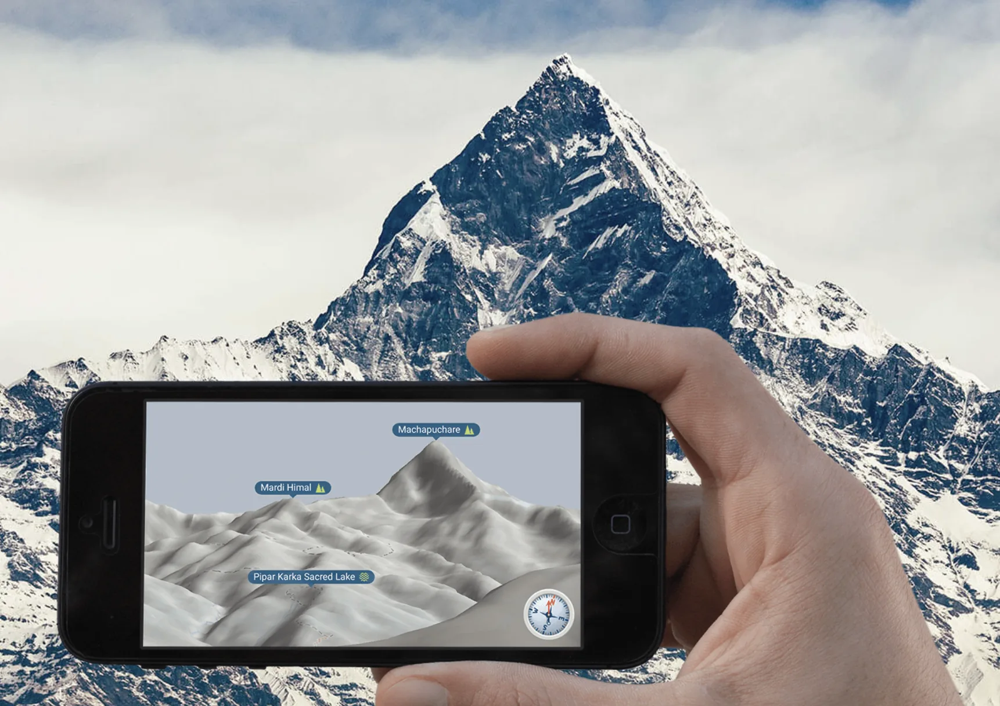

Case Study · eyeMaps
A map rendered from where you stand, not from above.
eyeMaps was the project through which I learned mobile development. It required real-time 3D graphics, geographic data, terrain models, device sensors, offline storage and a cross-platform architecture.

The idea
Traditional maps make the user mentally translate a top-down abstraction into the landscape around them. eyeMaps explored the inverse: render the map from the user's actual viewpoint.
The phone became an observer inside a 3D geographic model. Position came from GPS; viewing direction came from device sensors; terrain came from digital elevation data; geographic features came from OpenStreetMap; and the renderer had to keep all of it synchronized while the user moved.
Learning mobile development through eyeMaps
While learning the iOS and Android platform APIs, I also had to learn OpenGL, coordinate transformations, device sensors and offline map storage. I had to make those parts work together rather than treating the mobile application as a thin UI client.
Engineering scope
3D terrain
Transforming elevation data into a renderable landscape around the user's position.
Geospatial transforms
Mapping real-world coordinates and geographic features into a local 3D coordinate system.
Device orientation
Combining GPS, accelerometer, gyroscope and magnetometer data to align the virtual viewpoint with the physical world.
Real-time rendering
OpenGL rendering synchronized with mobile UI while maintaining interactive performance.
Offline operation
Downloading map and terrain regions in advance so the core experience remained useful outside network coverage.
Cross-platform architecture
The rendering and data layers were shared, while platform integrations remained native.
What I learned
eyeMaps taught me that graphics, geographic data, sensors and UI behavior could not be designed independently. A small error in any one of them was immediately visible in the rendered landscape. It was also my first experience of making performance-sensitive code work on two mobile platforms.
Qt later profiled the project, focusing on its combination of Qt Quick, native UI and OpenGL. The UI and 3D model had to stay synchronized at 60 fps with sub-pixel precision.
← Back to selected work